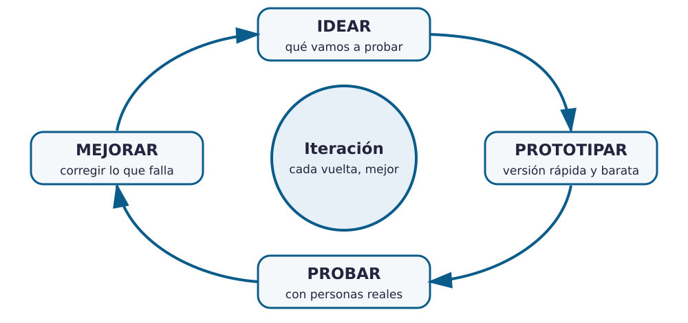
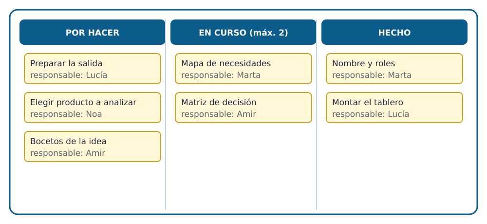

Contenido
Qué vas a aprender
Qué es un proyecto tecnológico, por qué se trabaja por iteraciones y cómo se organiza un equipo con un tablero Kanban. Al terminar, tu equipo tendrá montado su tablero y abierta su bitácora.
Qué es un proyecto tecnológico
Un proyecto tecnológico es el conjunto de pasos que llevan desde una necesidad hasta un producto o servicio que la resuelve. No es solo «construir algo»: también es decidir qué construir, para quién, con qué materiales, cuánto va a costar y cómo se va a comprobar que funciona.
Las fases clásicas son estas:
| Fase | Pregunta que responde | Ejemplo: aparcamiento de bicis del instituto |
|---|---|---|
| 1. Necesidad | ¿Qué problema hay y a quién afecta? | Las bicis se dejan atadas a la valla y estorban en la entrada. |
| 2. Investigación | ¿Qué existe ya? ¿Qué condiciones tenemos? | Modelos comerciales de aparcabicis, espacio disponible, presupuesto. |
| 3. Ideación | ¿Qué soluciones se nos ocurren? | Soporte en U, soporte de pared, marquesina con techo… |
| 4. Diseño | ¿Cómo será exactamente? | Bocetos, medidas, materiales elegidos. |
| 5. Planificación | ¿Quién hace qué y cuándo? | Tareas repartidas en el tablero Kanban. |
| 6. Construcción | ¿Cómo lo fabricamos? | Prototipo a escala, después pieza real. |
| 7. Evaluación | ¿Funciona? ¿Qué mejoramos? | Pruebas con bicis reales; ajustar la separación entre soportes. |
| 8. Difusión | ¿Cómo lo contamos? | Pitch, cartel, memoria del proyecto. |
No es una línea recta: el método iterativo
En la realidad casi ningún proyecto recorre las fases una sola vez y en orden. Se prueba una idea, se descubre un fallo y se vuelve atrás para corregirlo. Cada vuelta se llama iteración. Un buen equipo no evita los errores: los descubre pronto, cuando todavía son baratos de arreglar.

Ejemplo: el cartel del reciclaje
Un equipo diseña un cartel para que se separe bien la basura en el patio. Lo cuelga (iteración 1) y observa que nadie lo mira porque está muy alto. Lo baja y lo acerca a los cubos (iteración 2): mejora, pero la gente sigue confundiendo los envases. Añade fotos de los residuos más habituales (iteración 3) y por fin funciona. Tres versiones, cada una mejor que la anterior, y ninguna habría salido bien a la primera.
Gestionar el proyecto en equipo
Un proyecto en equipo necesita tres cosas que no hacen falta cuando trabajas solo:
- Saber qué hay que hacer: una lista de tareas concretas, no «hacer el dossier» sino «redactar el apartado 1 del dossier».
- Saber quién lo hace: cada tarea tiene un nombre al lado.
- Ver en qué punto está: pendiente, en marcha o terminada.
La herramienta más sencilla para conseguir las tres a la vez es el tablero Kanban.
El tablero Kanban
Kanban es una palabra japonesa que significa «tarjeta visual». El sistema nació en las fábricas de Toyota y hoy lo usan desde estudios de diseño hasta equipos de programación. Su idea es simple: cada tarea es una tarjeta que avanza por un tablero de tres columnas.

| Columna | Qué contiene |
|---|---|
| Por hacer | Todas las tareas pendientes, escritas de forma concreta. |
| En curso | Lo que se está haciendo ahora. Como máximo dos tarjetas por persona: empezar muchas cosas a la vez hace que ninguna se termine. |
| Hecho | Solo lo que está terminado del todo y revisado por otra persona del equipo. |
Tres reglas que hacen que funcione
- Cada tarjeta lleva una tarea y un nombre.
- Las tarjetas solo avanzan hacia la derecha; si una vuelve atrás, se apunta en la bitácora por qué.
- Si una columna se llena, ahí hay un atasco: se habla en el equipo antes de seguir.
La bitácora de equipo
La bitácora es el diario del proyecto. Al final de cada sesión, la persona con el rol de documentación escribe cuatro líneas:
- Qué se ha hecho hoy y quién lo ha hecho.
- Captura del tablero Kanban tal como queda.
- Decisiones tomadas (y por qué).
- Qué toca la próxima sesión.
No es un trámite: es lo que permite retomar el trabajo sin perder tiempo y demuestra cómo ha trabajado el equipo, no solo lo que ha entregado.
Ahora inténtalo
Actividad 1 · Arranca el estudio
- Nombre del estudio y roles. Elegid un nombre y repartid los cuatro roles (coordinación, documentación, portavocía, materiales y calidad). Anotadlo en el dossier.
- Tablero Kanban. Haced vuestra copia del tablero (una por equipo) y compartidla con los demás integrantes con permiso de edición. Cread las primeras tarjetas con las tareas de la unidad: preparar la salida de observación, rellenar el mapa de necesidades, elegir el producto a analizar…
- Primera entrada de la bitácora. Captura del tablero y reparto de roles.
Actividad 2 · Saltarse fases
Volved a la tabla de fases del principio de la página. Si el equipo saltara de la fase 1 (necesidad) a la 6 (construcción), ¿qué dos problemas se encontraría? Anotad la respuesta en la primera entrada de la bitácora, junto a la captura del tablero.
La bitácora se valora, antes de preparar el pitch, en la tarea de Moodle Bitácora de equipo; el reparto de roles y el tablero forman parte del Dossier de propuesta.
Test
Comprueba lo esencial antes de montar vuestro tablero.